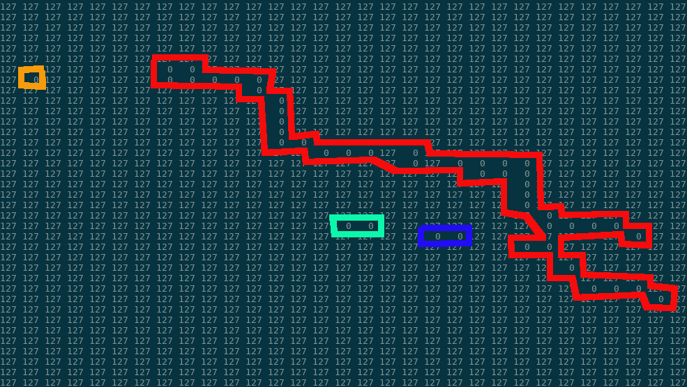

Pothole
A short description of the algorithms used in this project to detect cracks and potholes in data.
Visualizing the initial data I
Data first comes in as ASCII in form like this, where in this case 127 represents a standard road pixel and a zero value is a non-standard road pixel (crack, hole, noise, etc..)
Visualizing the initial data II
Non road pixels can be manually grouped logically like so (in this case groups are defined as non-road pixels connected to the left,right,up,down).
Visualizing the initial data III
Using the same concept, a large dataset can be programmatically visualized to look like this, where a colour is applied to each connected grouping of non-road pixels. When looking at the data this is clearly not an effective process since one road crack is grouped into hundreds of seperate logical groupings. Additionally many groupings are formed from noise in the picture.
Filtering out the noise I
To filter out the noise I use an algorithm I like to call 'floodsame'.
The floodsame process works like so. First, logically group non-road pixels using a growth factor, which is the number of allowed road pixels in between two non-road pixels.
Growth of 1
Growth of 2
Filtering out the noise II
Secondly, as the floodsame algorithm is creating groups it also applies a threshold value to the size of a grouping. If the size of a group (number of pixels) is less than the threshold it is removed and converted to road pixels.
The floodsame can be applied in iterations using various levels of 'growth' and 'threshold' to filter out different sizes of noise. The numbers to use for growth and threshold are not well defined and have been found through trial and error.
Before floodsame
After floodsame
Adjusting logical groupings
Logical groupings are extended using nearly the same concept. A growth factor is applied to a floodfill algorithm. Groups within a certain range are grouped together and given a group ID. In this way they can be exported back to an ASCII file or visualized by applying a color to each logical grouping.